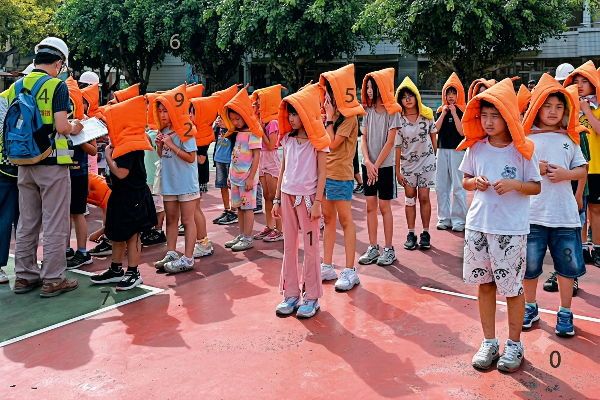

代號：「特」別靠「普」
校園安全實境解謎
緊急危難威脅警告 (THREAT DETECTED)
國際駭客組織入侵學校網路主機，鎖死全校電子門禁與廣播通訊系統。小隊需重建安全防禦網，攜手隊友突破關卡，拯救全校師生！
創建你的特務小隊
請輸入一個響亮且帥氣的隊伍名稱以初始化戰術平板
工作人員認證
請輸入管理授權碼以進入後台控管系統
密碼錯誤，請重新輸入！
工作人員中控平台
各關卡詳細答案與成功解鎖提示參考
📍 任務一：迷失的座標
問：強震來襲，請問抗震保命動作共幾個步驟？
答：B. 3 個
➡️ 動作提示：向東移動 3 步 (X位移 -3)
💬 成功提示："回答正確！抗震保命動作用有 3 個步驟。請在地圖上向東移動 3 步"
問：(防災食物準備天數) - (家具固定編號) = ？
答：A. 2 (食物 3 天 - 家具固定步驟 1)
➡️ 動作提示：向南移動 2 步 (Y位移 +2)
💬 成功提示："回答正確！(防災食物份量準備天數為 3 天) - (家具固定步驟編號 1) = 2。請在地圖上向南移動 2 步"
問：國家防災日是哪一天？(取日期倒數第二碼)
答：A. 9月21日 (倒數第二碼為 2)
➡️ 動作提示：向東移動 2 步 (X位移 -2)
💬 成功提示："回答正確！國家防災日為 9月21日，倒數第二個數字為 2。請在地圖上向東移動 2 步"
🎯 最終解鎖座標：(-5, 2) [藝文中心]
💬 定位成功回報："📡 小隊已定位至新座標點 (-5, 2)"
📦 任務二：物資精算師
• 預算上限：<= 1000 元
• 重量上限：<= 3500g
• 生存分數：>= 80 分
• 必選核心物資：瓶裝水 (25分)、求生哨 (8分)、任一能量食物（壓縮餅乾/巧克力/能量棒）
✨ 收服皮卡丘彩蛋：同時選擇 神奇寶貝球🔴 與 皮卡丘⚡ 時，皮卡丘重量 6000g 將歸零！
🔑 解鎖密碼：0 - 2 - 6 (水、求生哨、食物)
💬 解鎖成功提示："解鎖取得「主機室通行卡」與物資箱位置座標(2,0)"
問：下一任務的地點在校園何處？
答：健康中心
💬 驗證成功提示："🔑 地點安全驗證成功！前往下一關卡的傳輸協議已解鎖。"
🩹 任務三：血色救援行動
※ 此處由 安全小幫手 親自操作並勾選 10 項指標：
【頭部包紮 5 項檢核表】
1. 敷料已完全覆蓋頭部傷口
2. 雙眼、雙耳已完整露出，無遮擋 (小幫手檢核並勾選)
3. 平結打在平整面，完全避開骨突處 (小幫手檢核並勾選)
4. 包紮固定牢固，無滑脫風險 (小幫手檢核並勾選)
5. 傷患無任何不適或局部壓迫感 (小幫手檢核並勾選)
【懸臂固定 5 項檢核表】
1. 懸臂吊帶手肘夾角符合標準（手高肘低 < 90度）(小幫手檢核)
2. 三角巾頂角以旋轉打結或安全針固定於手肘後方 (小幫手檢核)
3. 平結位置偏向健側（避開頸椎正後方壓迫）(小幫手檢核)
4. 指尖外露，便於小幫手檢查末梢血循 (小幫手檢核)
5. 經捏壓測試，微血管回血充盈時間小於 2 秒 (小幫手檢核)
💬 系統核定："🟢 實境包紮核定：【包紮牢固、打結避開突骨、血循完全正常】！檢核正式通過！"
💬 解鎖成功提示："安全小幫手已嚴格核對傷口覆蓋度、視線完整露出、平結位置避開骨突及頸椎正後方、並確認微血管循環充盈。檢核無誤！下一關關鍵安全定位提示資訊：座標 (0,3)"
問：下一任務的地點在校園何處？
答：司令台
💬 驗證成功提示："🔑 地點安全驗證成功！前往下一關卡的傳輸協議已解鎖。"
🛡️ 任務四：真相的迷霧
說明：排除假新聞（論壇9, 限動5, 農場8），剩餘 3 張真實新聞角落數字從小到大排列。
答：037
💬 成功回饋："火警情報 analysis 成功！淘汰了假新聞，解鎖鑑識平板！"
說明：將透明掃描板疊加在「無破綻的照片 C」上，讀取紅框內數字。
答：2048
💬 成功回饋："影像鑑識成功！鎖定真實場景，開啟最後的官方防線網域！"
問：選取正確的教育部官方網址？
答：選項 C (www.edu.tw/campus-safety)
💬 成功回饋："官方防線驗證成功，通關成功！" (解密獲取座標 (-2, 6))
問：下一任務的地點在校園何處？
答：維新館
💬 驗證成功提示："🔑 地點安全驗證成功！前往下一關卡的傳輸協議已解鎖。"
⚙️ 任務五：重啟神盾防線
• 地震集合點 (操場) ➔ ATTENTION
• 地震集合點 (維新館) ➔ SAFE
• AED 放置處 (活動中心) ➔ CALM
• AED 放置處 (健康中心) ➔ CLAM (⚠️干擾單字！)
• 防空避難牌 (綜合大樓) ➔ OTHERS
• 防空避難牌 (更新樓 1F) ➔ DOWN
• 防空避難牌 (資源教室) ➔ ESCAPE
• 防空避難牌 (司令台) ➔ WARNING
• 消防設備 (精進樓綜職三) ➔ PAY
• 消防設備 (藝文中心) ➔ HELPS
• 消防設備 (員生社) ➔ ALARM
• 消防設備 (警衛室) ➔ READY
組員需在戰術平板內將 6 個單字拼裝成三大安全防護經典口號 (順序不拘)：
1. PAY ATTENTION (集中注意)
2. CALM DOWN (保持冷靜)
3. HELPS OTHERS (主動助人)
💬 解鎖成功提示："啟動神盾系統重啟程式，進入最終結局榮譽頁面！"
全隊伍即時解謎狀態與排名監控
| 排名 | 隊伍名稱 | 任務進度 (五關) | 🏆 第一通關成績 | 🔄 闖關次數 | ⏱️ 當前/本次時間 | ❌ 當前失敗次數 | 🎖️ 當前稱號 | 操作 |
|---|
快速測試工具 (模擬玩家狀態)
您可以模擬隊伍登入，並直接標記任務為已完成：
地圖探索模式設定：
循序模式下玩家必須按順序破解關卡，自由探索則無限制。
當前系統活躍測試狀態
正常運作中📢 請聽小幫手總結本關卡的安全守則
小幫手正為您講解本關卡之安全防護與避難守則，請仔細聆聽。聆聽完畢後，點選下方按鈕即可。
📍 區域抵達安全核實
為了保障挑戰數據的真實性，請確保您的小組成員已全員實體抵達上述地點後，再點選下方按鈕解鎖任務內容。
📡 戰術平板連線中...
📦 救命物資挑選限制
預算限制：$1000 ｜ 重量限制：3500g ｜生存分數＞80分
⚠️ 為了維持生存，有三個要素是必備的，分別是：飲水 (瓶裝水)、基本熱量食物 (如壓縮餅乾)、以及呼救信號工具 (求生哨) ！⚠️
🚨 意外爆發！組員受傷
一、帶狀三角巾頭部包紮
參考影片 ➔📖 文字步驟指南：
- 製作帶狀：將三角巾的頂角拉向底邊，依需求寬度連續向內反摺，製成寬或窄的帶狀巾。
- 中心對齊：將帶狀巾的中央放置於需要固定的頭部或敷料處（如額頭 or 後腦）。
- 環繞交叉：將兩端分別繞過頭部，在對側交叉，並適度施加壓力。
- 平結固定：將兩端繞回原處，打一個牢固的「平結」。避免在受壓部位或骨突處打結，以免造成壓迫疼痛與血液不循環。
實際包紮檢核表 (此處由小幫手進行檢核並勾選)：
二、三角巾懸臂吊帶固定
參考影片 ➔📖 文字步驟指南：
- 頂點對齊：將三角巾攤開，頂點置於傷側手肘處，底邊與手臂平行。
- 內層包覆：將三角巾下端拉起，覆蓋整個前臂，並將底邊塞入傷臂下方。
- 繞過健側：將三角巾的另一端（下垂端）拉起，繞過「健側」的肩膀。
- 頸部打結：將兩端在健側肩膀處打平結。注意：結絕對不能打在頸椎正後方。
- 固定肘部：將手肘處多餘的三角巾向內反摺並固定，防前臂滑出。
實際固定檢核表 (此處由小幫手進行檢核並勾選)：
階段 1：實習工廠火警情報 (3位數密碼鎖)
大地震引發「機電實習工廠」起火！平板收到 6 張情報卡，必須淘汰 3 張假情報，請將正確的3張情報卡數字由小到大排序
⚠️ 工廠爆炸死傷慘重，大家快逃啊！
📻 請各班同學依原定路線前往空曠處避難。
📸 快逃！火勢已經燒到二樓啦！（無來源影片）
🚒 遭遇濃煙請伏低姿勢，沿牆面尋找出口。
📰 震驚！吃這個偏方可以完全防濃煙嗆傷...
💬 本班已於操場點名完畢，請勿驚慌。
階段 2：校園影像鑑識科
〔使用任務二獲得的主機室通行卡進行〕 系統攔截到 3 張避難路線的「現場照片」，請找出唯一最貼近真實的照片(判斷條件：時間、地點、語言)，並使用主機室通行卡疊加，找出 4 位數密碼。



教育部平安回報防線
駭客試圖攔截你們的安全回報訊號！以下有三個網站，請觀察各選項中的網站組成，並找出正確的官方網站網址。
💾 地理防禦資料庫毀損
進入主機室後，系統顯示「地理防禦資料庫已毀損」。你們必須手動補全校園的安全參數，系統才能偵測到安全路徑並解除封鎖。
🛡️ 校園安全探索任務
請依下方 4 個地區提示（尋找紅色閃爍標示），收集 6 個安全單字並在組合區拼出 3 大安全原則：
🧩 組合安全原則
請點擊 6 個單字組出 3 個片語形成校園安全應變口號。
🎒 背包 (已收集：0/6)
點擊下方單字移入左側組合區；若背包已滿，可點擊紅色的 ✕ 丟棄單字以空出容量。
神盾系統成功啟動
AEGIS MAIN FRAMEWORK RESTORED SUCCESSFULLY
>>> 安全防護連線已就緒！
全校電子門禁已安全解鎖，廣播通訊全面恢復，駭客組織的連線已被徹底斬斷。
🎓 校園安全學習核心提示
防範於未然是安全的第一步！不管是防震、消防避難，還是防範新型態詐騙、反對網路匿名霸凌，保持「冷靜查證」、「即時求救通報」是守護自己與家人的黃金原則。
🎉 恭喜通關！神盾安全防禦網已圓滿重建，任務已順利達成！
📸 任務圓滿成功！請小隊留下與成功畫面合影照片紀念，留下這光榮歷史的一刻！